要点：CSS布局（单/2/3列布局、圣杯布局、垂直布局）、CSS代码管理、CSS预处理器。
一、CSS布局
CSS 虽然初衷是用来美化 HTML 文档的，但实际上随着 float、position 等属性的出现，它已经可以起到调整文档渲染结构的作用了，而随着弹性盒子以及网格布局的推出，CSS 将承担越来越重要的布局功能。渐渐地我们发现 HTML 标签决定了页面的逻辑结构，而 CSS 决定了页面的视觉结构。
这一课时我们先来分析常见的布局效果有哪些，然后再通过代码来实现这些效果，从而帮助你彻底掌握 CSS 布局。
我们通常提到的布局，有两个共同点：
- 大多数用于 PC 端，因为 PC 端屏幕像素宽度够大，可布局的空间也大；
- 布局是有限空间内的元素排列方式，因为页面设计横向不滚动，纵向无限延伸，所以大多数时候讨论的布局都是对水平方向进行分割。
实际上我们在讨论布局的时候，会把网页上特定的区域进行分列操作。按照分列数目，可以大致分为 3 类，即单列布局、2 列布局、3 列布局。
1.1 单列布局
单列布局是最常用的一种布局，它的实现效果就是将一个元素作为布局容器，通常设置一个较小的（最大）宽度来保证不同像素宽度屏幕下显示一致。
示例网站
拉勾，蓝色区域为布局容器，水平居中对齐，宽度 1260px：
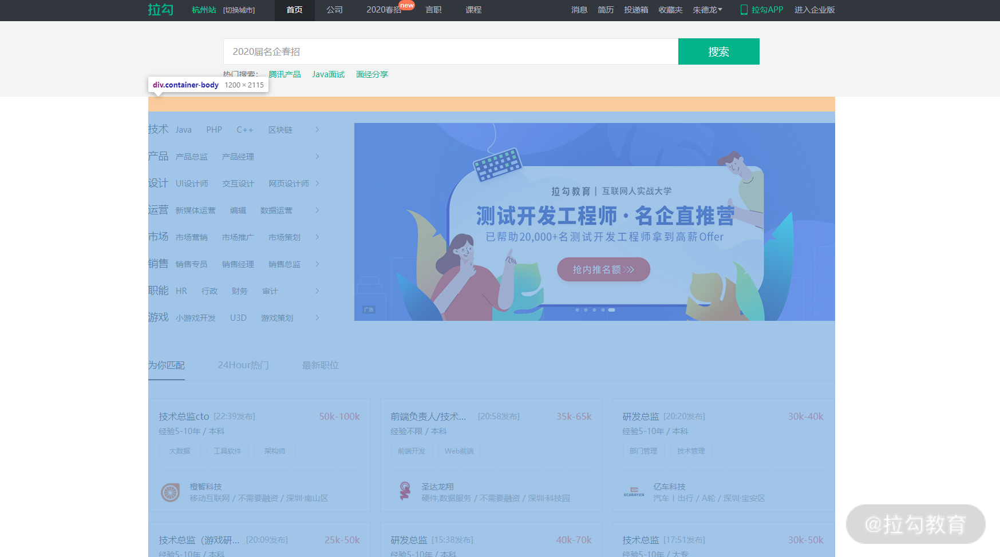
谷歌搜索，蓝色区域为布局容器，水平左对齐，宽度 652px：
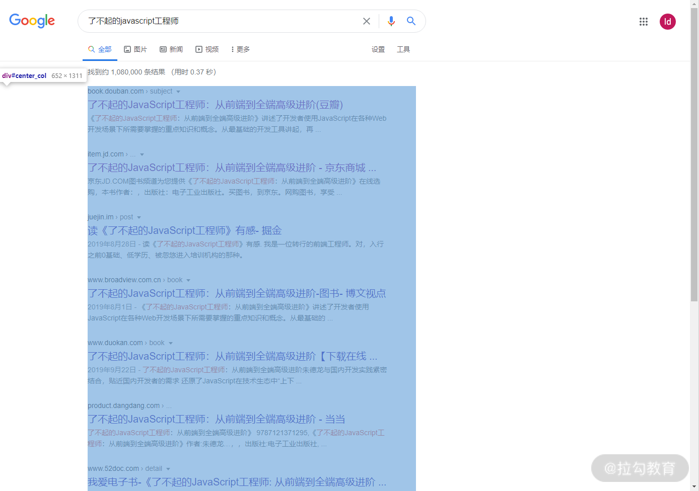
一些网站会将单列布局与其他布局方式混合使用，比如拉勾网首页的海报和左侧标签就使用了 2 列布局，这样既能向下兼容窄屏幕，又能按照主次关系显示页面内容。
这种布局的优势在于基本上可以适配超过布局容器宽度的各种显示屏幕，比如上面的示例网站布局容器宽度为 700px，也就是说超过 700px 宽度的显示屏幕上浏览网站看到的效果是一致的。
但它最大的缺点也是源于此，过度的冗余设计必然会带来浪费。例如，在上面的例子中，其实我的屏幕宽度是足够的，可以显示更多的内容，但是页面两侧却出现了大量空白区域，如果在 4k 甚至更宽的屏幕下，空白区域大小会超过页面内容区域大小！
1.2 2 列布局
2 列布局使用频率也非常的高，实现效果就是将页面分割成左右宽度不等的两列，宽度较小的列设置为固定宽度，剩余宽度由另一列撑满。为了描述方便，我们暂且称宽度较小的列父元素为次要布局容器，宽度较大的列父元素为主要布局容器。
示例网站
Ant Design 文档，蓝色区域为主要内容布局容器，侧边栏为次要内容布局容器。
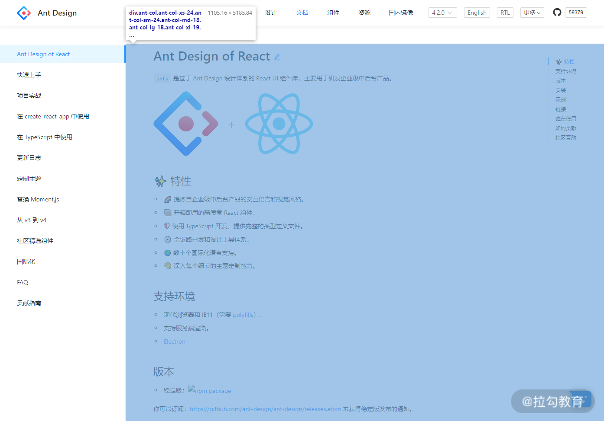
这种布局适用于内容上具有明显主次关系的网页，比如 API 文档页面中左侧显示内容导航，右侧显示文档描述；又比如后台管理系统中左侧显示菜单栏，右侧显示配置页面。相对于单列布局，在屏幕宽度适配方面处理得更好。当屏幕宽度不够时，主要内容布局容器优先显示，次要内容布局容器改为垂直方向显示或隐藏，但有时候也会和单列布局搭配使用，作为单列布局中的子布局使用。
1.3 3 列布局
3 列布局按照左中右的顺序进行排列，通常中间列最宽，左右两列次之。
示例网站
登录 GitHub 后，蓝色区域为宽度最大的中间列。
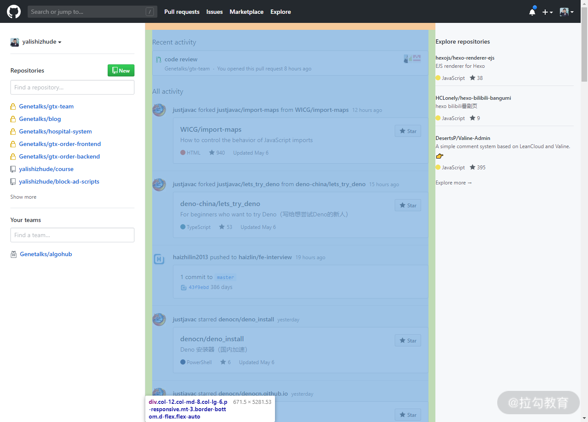
CSDN 首页，这是 3 列布局的第二种实现方式，蓝色部分就是 2 列布局的主要布局容器，而它的子元素又使用了 2 列布局。
3 列布局和 2 列布局类似，也有明确的主次关系，只是关系层次增加了一层。下面我们来看看如何实现这些布局。
1.4 布局实现
单列布局没有太多技术难点，通过将设置布局容器（最大）宽度以及左右边距为 auto 即可实现，我们重点讨论 2 列和 3 列布局。关于这两种布局，在网上可以找到很多实现方式，我们是不是只要把这些方式收集起来然后都记住就行了呢？
当然不是！
我们要做的是通过归纳法，找到这些方式的共同实现步骤，只要把这些步骤记住了，就能做到举一反三。
你可以试着自己先整理一下，或者直接看我整理好的结果。
要实现 2 列布局或 3 列布局，可以按照下面的步骤来操作：
（1）为了保证主要布局容器优先级，应将主要布局容器写在次要布局容器之前。
（2）将布局容器进行水平排列；
（3）设置宽度，即次要容器宽度固定，主要容器撑满；
（4）消除布局方式的副作用，如浮动造成的高度塌陷；
（5）为了在窄屏下也能正常显示，可以通过媒体查询进行优化。
根据以上操作步骤，先来看一个使用 flex 布局实现 2 列布局的例子。
第 1 步，写好 HTML 结构。这里为了查看方便，我们为布局容器设置背景颜色和高度。
1 | <style> |
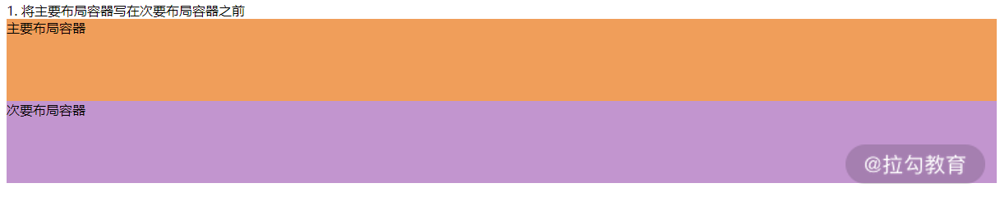
第 2 步，将布局容器水平排列：
1 | <style> |
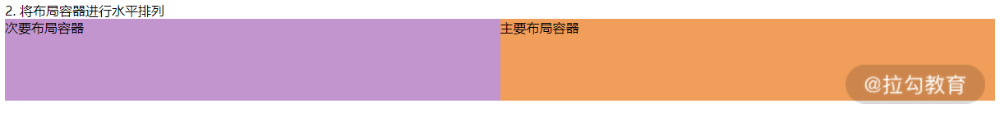
第 3 步，调整布局容器宽度：
1 | <style> |
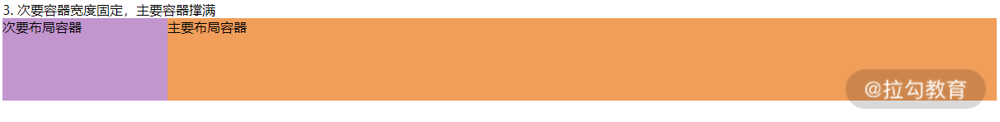
第 4 步，消除副作用，比如浮动造成的高度塌陷。由于使用 flex 布局没有副作用，所以不需要修改，代码和效果图同第 3 步。
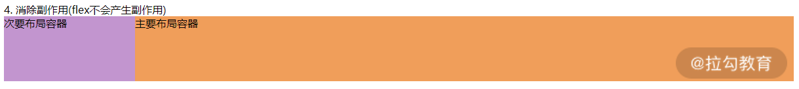
第 5 步，增加媒体查询。
1 | <style> |
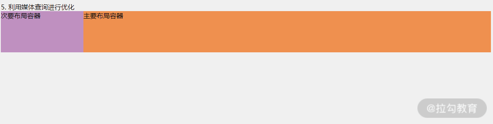
下面再来个复杂些的 3 列布局的例子——圣杯布局。
第 1 步，写好 HTML 结构，为了辨认方便，我们给布局容器设置背景色和高度：
1 | <style> |
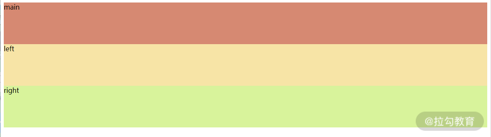
第 2 步，让布局容器水平排列：
1 | <style> |
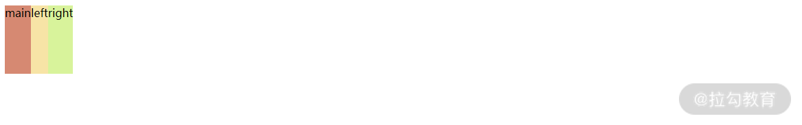
第 3 步，调整宽度，将主要布局容器 main 撑满，次要布局容器 left 固定 300px，次要布局容器 right 固定 200px。
这里如果直接设置的话，布局容器 left 和 right 都会换行，所以我们需要通过设置父元素 wrap 内边距来压缩主要布局 main 给次要布局容器留出空间。同时通过设置次要布局容器边距以及采用相对定位调整次要布局容器至两侧。
1 | <style> |
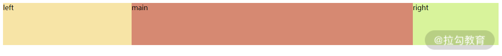
第 4 步，消除副作用。我们知道使用浮动会造成高度塌陷，如果在父元素后面添加新的元素就会产生这个问题。所以可以通过伪类来清除浮动，同时减小页面宽度，还会发现次要布局容器 left 和 right 都换行了，但这个副作用我们可以在第 5 步时进行消除。
1 | <style> |
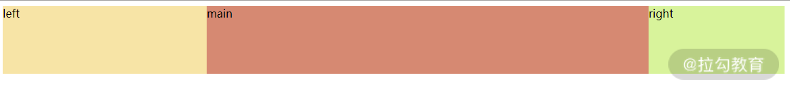
第 5 步，利用媒体查询调整页面宽度较小情况下的显示优先级。这里我们仍然希望优先显示主要布局容器 main，其次是次要布局容器 left，最后是布局容器 right。
1 | <style> |
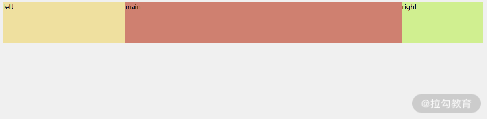
这种 3 列布局的实现，就是流传已久的“圣杯布局”，但标准的圣杯布局没有添加媒体查询。
1.5 延伸1：垂直方向的布局
垂直方向有一种布局虽然使用频率不如水平方向布局高，但在面试中很容易被问到，所以这里特意再补充讲解一下。
这种布局将页面分成上、中、下三个部分，上、下部分都为固定高度，中间部分高度不定。当页面高度小于浏览器高度时，下部分应固定在屏幕底部；当页面高度超出浏览器高度时，下部分应该随中间部分被撑开，显示在页面最底部。
这种布局也称之为”sticky footer“，意思是下部分粘黏在屏幕底部。要实现这个功能，最简单的就是使用 flex 或 grid 进行布局。下面是使用 flex 的主要代码：
1 | <style> |
代码实现思路比较简单，将布局容器的父元素 display 属性设置成 flex，伸缩方向改为垂直方向，高度撑满页面，再将中间布局容器的 flex 属性设置为 1，让其自适应即可。
如果要考虑兼容性的话，其实现起来要复杂些，下面是主要代码：
1 | <style> |
将上部分布局容器与中间布局容器放入一个共同的父元素中，并让父元素高度撑满，然后设置内下边距给下部分布局容器预留空间，下部分布局容器设置上外边距“嵌入”父元素中。从而实现了随着中间布局容器高度而被撑开的效果。
1.6 延伸2：框架中栅格布局的列数
很多 UI 框架都提供了栅格系统来帮助页面实现等分或等比布局，比如 Bootstrap 提供了 12 列栅格，elment ui 和 ant design 提供了 24 列栅格。
那么你思考过栅格系统设定这些列数背后的原因吗？
首先从 12 列说起，12 这个数字，从数学上来说它具有很多约数 1、2、3、4、6、12，也就是说可以轻松实现 1 等分、2 等分、3 等分、4 等分、6 等分、12 等分，比例方面可以实现 1:11、1:5、1:3、1:2、1:1、1:10:1、1:4:1 等。如果换成 10 或 8，则可实现的等分比例就会少很多，而更大的 16 似乎是个不错的选择，但对于常用的 3 等分就难以实现。
至于使用 24 列不使用 12 列，可能是考虑宽屏幕（PC 端屏幕宽度不断增加）下对 12 列难以满足等分比例需求，比如 8 等分。同时又能够保证兼容 12 列情况下的等分比例（方便项目迁移和替换）。
1.7 总结
通过这一讲，我们学习了几种常见布局，包括单列、2 列、3 列及垂直三栏布局，同时思考每种布局的优缺点和使用场景，并且对 2 列布局和 3 列布局实现方法归纳成了 5 个步骤，希望你能举一反三，并应用到实际的工作中。
最后布置一道思考题：你还想到了使用哪些方法来实现 2 列或 3 列布局？
二、CSS代码文件管理
这一节提升一下思考维度，从组织管理的角度探讨如何管理好项目中的 CSS 代码。
接下来我们先解决 CSS 原生语法未能很好实现的模块化和作用域的问题，然后再对代码结构进行优化，提升代码的复用率。
2.1 如何组织样式文件
尽管 CSS 提供了 import 命令支持文件引用，但由于其存在一些问题（比如影响浏览器并行下载、加载顺序错乱等）导致使用率极低。更常见的做法是通过预处理器或编译工具插件来引入样式文件，因此本课时的讨论将不局限于以 .css 为后缀的样式文件。
管理样式文件的目的就是为了让开发人员更方便地维护代码。
具体来说就是将样式文件进行分类，把相关的文件放在一起。让工程师在修改样式的时候更容易找到对应的样式文件，在创建样式文件的时候更容易找到对应的目录。
下面我们来看看热门的开源项目都是怎么来管理样式文件的。
开源项目中的样式文件
我们先来看看著名的 UI 相关的开源项目是怎么管理样式文件的。
以 Bootstrap 4.4 为例，下图是项目样式代码结构，可以看出项目使用的是 Sass 预处理器。
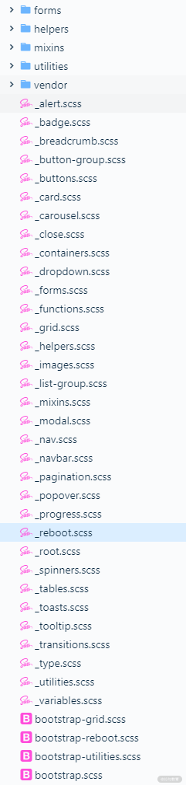
该目录包括了 5 个目录、组件样式文件和一些全局样式。再来分析下目录及内容：
- forms/，表单组件相关样式；
- helpers/，公共样式，包括定位、清除等；
- mixins/，可以理解为生成最终样式的函数；
- utilities/，媒体查询相关样式；
- vendor/，依赖的外部第三方样式。
根目录存放了组件样式文件和目录，其他样式文件放在不同的目录中。目录中的文件分类清晰，但目录结构相对于大多数实际项目而言过于简单（只有样式文件）。
我们再来看一个更符合大多数情况的开源项目 ant-design 4.2，该项目采用 Less 预处理器，主要源码放在 /components 目录下：
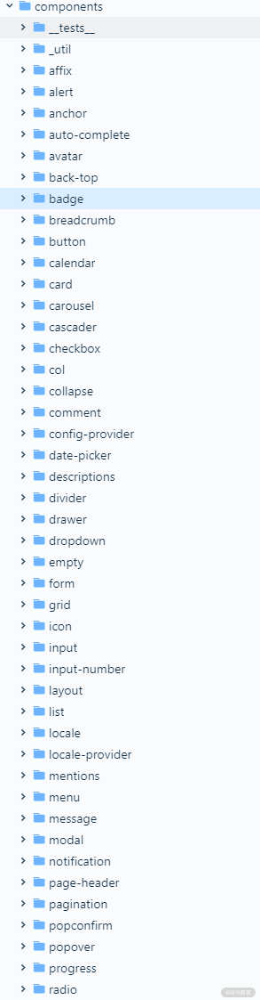
从目录名称上不难猜测，各个组件代码通过文件夹区分，点击其中的 alert 文件夹查看也确实如此，组件相关的代码、测试代码、demo 示例、样式文件、描述文档都在里面。
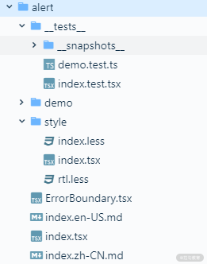
至于全局样式和公共样式则在 /components/style 目录下：
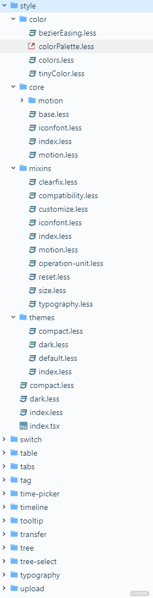
其中包括 4 个目录：
- color/，颜色相关的变量与函数；
- core/，全局样式，根标签样式、字体样式等；
- mixins/，样式生成函数；
- themes/，主题相关的样式变量。
将组件代码及相关样式放在一起，开发的时候修改会很方便。 但在组件目录 /comnponents 下设置 style 目录存放全局和公共样式，在逻辑上就有些说不通了，这些“样式”文件并不是一个单独的“组件”。再看 style 目录内部结构，相对于设置单独的 color 目录来管理样式中的颜色，更推荐像 Bootstrap 一样设立专门的目录或文件来管理变量。
最后来看看依赖 Vue.js 实现的热门 UI 库 element 2.13.1 的目录结构。项目根路径下的 packages 目录按组件划分目录来存放其源码，但和 ant-design 不同的是，组件样式文件并没有和组件代码放在一起。下图是 /packages 目录下的部分内容。
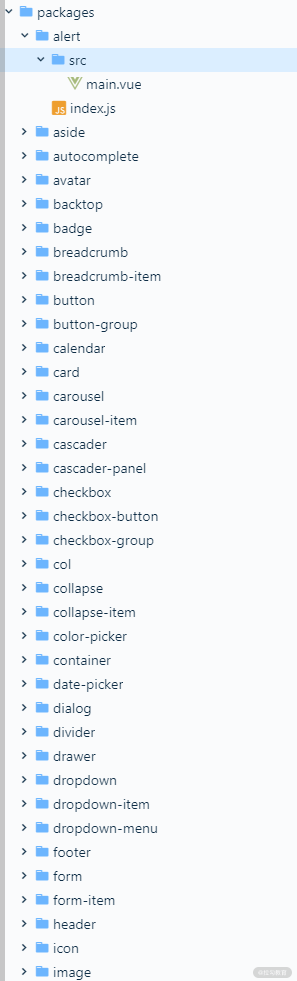
element 将样式文件统一放入了 /packages/theme-chalk 目录下，目录部分内容如下图所示：
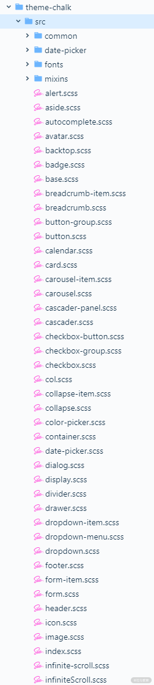
其中包含 4 个目录：
- common/，一些全局样式和公共变量；
- date-picker/，日期组件相关样式；
- fonts/，字体文件；
- mixins/，样式生成函数及相关变量。
和 antd 有同样的问题，把样式当成“组件”看待，组件同级目录设立了 theme-chalk 目录存放样式文件。theme-chalk 目录下的全局样式 reset.scss 与组件样式同级，这也有些欠妥。这种为了将样式打包成模块，在独立项目中直接嵌入另一个独立项目（可以简单理解为一个项目不要有多个 package.json 文件）并不推荐，更符合 Git 使用规范的做法，即是以子模块的方式引用进项目。 而且将组件样式和源码分离这种方式开发的时候也不方便，经常需要跨多层目录查找和修改样式。
样式文件管理模式
除了开源项目之外，Sass Guidelines 曾经提出过一个用来划分样式文件目录结构的 7-1 模式也很有参考意义。这种模式建议将目录结构划分为 7 个目录和 1 个文件，这 1 个文件是样式的入口文件，它会将项目所用到的所有样式都引入进来，一般命名为 main.scss。
剩下的 7 个目录及作用如下：
- base/，模板代码，比如默认标签样式重置；
- components/，组件相关样式；
- layout/，布局相关，包括头部、尾部、导航栏、侧边栏等；
- pages/，页面相关样式；
- themes/，主题样式，即使有的项目没有多个主题，也可以进行预留；
- abstracts/，其他样式文件生成的依赖函数及 mixin，不能直接生成 css 样式；
- vendors/，第三方样式文件。
点击这里获取示例项目地址，截图如下图所示：
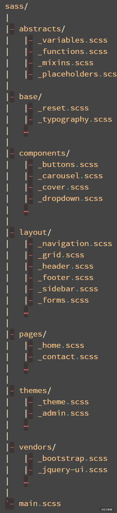
由于这个划分模式是专门针对使用 Sass 项目提出的，从样式文件名称看出还留有 jQuery 时代的影子，为了更加符合单页应用的项目结构，我们可以稍作优化。
- main.scss 文件存在意义不大，页面样式、组件样式、布局样式都可以在页面和组件中引用，全局样式也可以在根组件中引用。而且每次添加、修改样式文件都需要在 main.scss 文件中同步，这种过度中心化的配置方式也不方便。
- layout 目录也可以去除，因为像 footer、header 这些布局相关的样式，放入对应的组件中来引用会更好，至于不能被组件化的“_grid”样式存在性也不大。因为对于页面布局，既可以通过下面介绍的方法来拆分成全局样式，也可以依赖第三方 UI 库来实现。所以说这个目录可以去除。
- themes/ 目录也可以去除，毕竟大部分前端项目是不需要设置主题的，即使有主题也可以新建一个样式文件来管理样式变量。
- vendors/ 目录可以根据需求添加。因为将外部样式复制到项目中的情况比较少，更多的是通过 npm 来安装引入 UI 库或者通过 webpack 插件来写入对应的 cdn 地址。
所以优化后的目录结构如下所示：
1 | src/ |
这只是推荐的一种目录结构，具体使用可以根据实际情况进行调整。比如在项目的 src 目录下创建了模块目录，按照模块来拆分路由以及页面、组件，所以每个模块目录下都会有 pages/ 目录和 components/ 目录。
2.2 如何避免样式冲突
由于 CSS 的规则是全局的，任何一个样式规则，都对整个页面有效，所以如果不对选择器的命名加以管控会很容易产生冲突。
手动命名
最简单有效的命名管理方式就是制定一些命名规则，比如 OOCSS、BEM、AMCSS，其中推荐比较常用的 BEM。
这里简单补充一下 BEM 相关知识，熟悉 BEM 的可以直接跳过。
BEM 是 Block、Element、Modifier 三个单词的缩写，Block 代表独立的功能组件，Element 代表功能组件的一个组成部分，Modifier 对应状态信息。
下图是官方给出的示例代码：
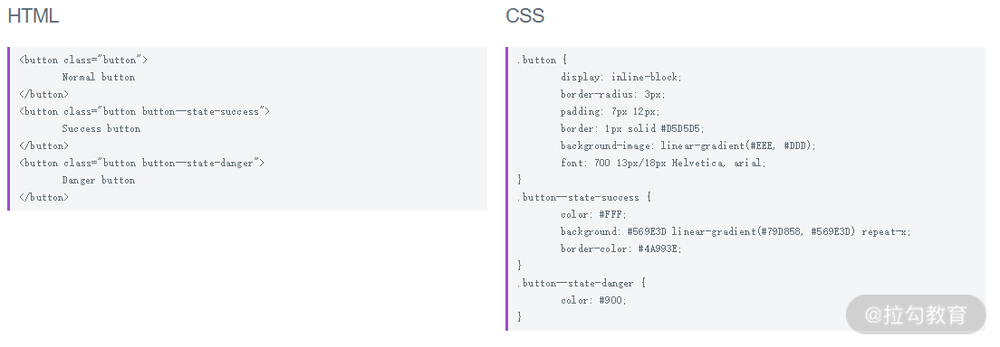
从命名可以看到 Element 和 Modifier 是可选的，各个单词通过双横线（也可以用双下划线）连接（双横线虽然能和单词的连字符进行区分，但确实有些冗余，可以考虑直接用下划线代替）。BEM 的命名方式具有语义，很容易理解，非常适用于组件样式类。
工具命名
通过命名规范来避免冲突的方式固然是好的，但这种规范约束也不能绝对保证样式名的唯一性，而且也没有有效的校验工具来保证命名正确无冲突。所以，聪明的开发者想到了通过插件将原命名转化成不重复的随机命名，从根本上避免命名冲突。比较著名的解决方案就是 CSS Modules。
下面是一段 css 样式代码：
1 | /* style.css */ |
借助 css Modules 插件，可以将 css 以 JSON 对象的形式引用和使用。
1 | import styles from "./style.css"; |
编译之后的代码，样式类名被转化成了随机名称：
1 | <div class="_3zyde4l1yATCOkgn-DBWEL"></div> |
但这种命名方式带来了一个问题，那就是如果想在引用组件的同时，覆盖它的样式会变得困难，因为编译后的样式名是随机。例如，在上面的示例代码中，如果想在另一个组件中覆盖 className 样式就很困难，而在手动命名情况下则可以直接重新定义 className 样式进行覆盖。
2.3 如何高效复用样式
如果你有一些项目开发经历，一定发现了某些样式会经常被重复使用，比如：
- display:inline-block
- clear:both
- position:relative
- …
这违背了 DRY（Don’t Repeat Yourself）原则，完全可以通过设置为全局公共样式来减少重复定义。
哪些样式规则可以设置为全局公共样式呢？
- 首先是具有枚举值的属性，除了上面提到的，还包括 cursor:pointer、float:left 等。
- 其次是那些特定数值的样式属性值，比如 margin: 0、left: 0、height: 100%。
- 最后是设计规范所使用的属性，比如设计稿中规定的几种颜色。
样式按照小粒度拆分之后命名规范也很重要，合理的命名规范可以避免公共样式重复定义，开发时方便快速引用。
前面提到的语义化命名方式 BEM 显然不太适合。首先全局样式是基于样式属性和值的，是无语义的；其次对于这种复用率很高的样式应该尽量保证命名简短方便记忆，所以推荐使用更简短、更方便记忆的命名规则。比如我们团队所使用的就是“属性名首字母 + 横线 + 属性值首字母”的方式进行命名。
举个例子，比如对于 display:inline-block 的样式属性值，它的属性为“display”缩写为“d”，值为“inline-block”，缩写为“ib”，通过短横线连接起来就可以命名成“d-ib”；同样，如果工程师想设置一个 float:left 的样式，也很容易想到使用“f-l”的样式名。
那会不会出现重复定义呢？这个问题很好解决，按照字母序升序定义样式类就可以了。
2.4 延伸：值得关注的 CSS in JavaScript
我们都知道 Web 标准提倡结构、样式、行为分离（分别对应 HTML、CSS、JavaScript 三种语言），但 React.js 的一出现就开始颠覆了这个原则。
先是通过 JSX 将 HTML 代码嵌入进 JavaScript 组件，然后又通过 CSS in JavaScript 的方式将 CSS 代码也嵌入进 JavaScript 组件。这种“all in JavaScript”的方式确实有悖 Web 标准。但这种编写方式和日益盛行的组件化概念非常契合，具有“高内聚”的特性，所以未来标准有所改变也未尝不可能。这也正是我们需要关注 CSS in JavaScript 技术的原因。
相对于使用预处理语言编写样式，CSS in JavaScript 具有两个不那么明显的优势：
- 可以通过随机命名解决作用域问题，但命名规则和 CSS Modules 都可以解决这个问题；
- 样式可以使用 JavaScript 语言特性，比如函数、循环，实现元素不同的样式效果可以通过新建不同样式类，修改元素样式类来实现。
我们以 styled-compoents 为例进行说明，下面是示例代码，第一段是源代码：
1 | // 源代码 |
第二段是编译后生成的：
1 | <!--HTML 代码--> |
对比以上两段代码很容易发现，在编译后的样式代码中有很多重复的样式规则。这并不友好，不仅增加了编写样式的复杂度和代码量，连编译后也增加了冗余代码。
styled-components 只是 CSS in JavaScript 的一种解决方案，其他解决方案还有很多，有兴趣的同学可以点击这里查阅 GitHub 上的资料学习，上面收录了现有的 CSS in JavaScript 解决方案。
2.5 总结
对于样式文件的管理，推荐使用 7-1 模式简化后的目录结构，包括 pages/、components/、abastracts/、base/ 4 个目录。对于样式命名，可以采用 BEM 来命名组件、面向属性的方式来命名公共样式。
三、手写CSS预处理器
3.1 功能需求
这一课时我们来写一个 CSS 预处理器，它的功能可以理解为精简版的 stylus，主要实现的功能有：
- 用空格和换行符替代花括号、冒号和分号；
- 支持选择器的嵌套组合；
- 支持以“$”符号开头的变量定义和使用。
如果你对这种风格不是很熟悉也没关系，通过下面这个例子你就能很快明白。
目标 CSS 代码，为 5 条样式规则。第 1 条和第 5 条样式规则是最简单的，使用 1 个选择器，定义了 1 条样式属性；第 2 条规则多用了一个标签选择器，样式属性值为多个字符串组成；第 3 条规则使用了类选择器；第 4 条规则增加了属性选择器，并且样式属性增加为 2 条。
1 | div {color:darkkhaki;} |
再来看看“源代码”，首先声明了两个变量，然后通过换行缩进定义了上述样式规则中的选择器和样式：
1 | $ib inline-block |
像上面这种强制缩进换行的风格应用非常广泛，比如编程语言 Python、HTML 模板 pug、预处理器 Sass（以“.sass”为后缀的文件）。
这种风格可能有些工程师并不适应，因为缩进空格数不一致就会导致程序解析失败或执行出错。但它也有一些优点，比如格式整齐，省去了花括号等冗余字符，减少了代码量。推荐大家在项目中使用。
3.2 编译器
对预处理器这种能将一种语言（法）转换成另一种语言（法）的程序一般称之为“编译器”。我们平常所知的高级语言都离不开编译器，比如 C++、Java、JavaScript。
不同语言的编译器的工作流程有些差异，但大体上可以分成三个步骤：解析（Parsing）、转换（Transformation）及代码生成（Code Generation）。
解析
解析步骤一般分为两个阶段：词法分析和语法分析。
词法分析就是将接收到的源代码转换成令牌（Token），完成这个过程的函数或工具被称之为词法分析器（Tokenizer 或 Lexer）。
令牌由一些代码语句的碎片生成，它们可以是数字、标签、标点符号、运算符，或者其他任何东西。
将代码令牌化之后会进入语法分析，这个过程会将之前生成的令牌转换成一种带有令牌关系描述的抽象表示，这种抽象的表示称之为抽象语法树（Abstract Syntax Tree，AST）。完成这个过程的函数或工具被称为语法分析器（Parser）。
抽象语法树通常是一个深度嵌套的对象，这种数据结构不仅更贴合代码逻辑，在后面的操作效率方面相对于令牌数组也更有优势。
可以回想一下，我们在第 06 讲中提到的解析 HTML 流程也包括了这两个步骤。
转换
解析完成之后的下一步就是转换，即把 AST 拿过来然后做一些修改，完成这个过程的函数或工具被称之为转换器（Transformer）。
在这个过程中，AST 中的节点可以被修改和删除，也可以新增节点。根本目的就是为了代码生成的时候更加方便。
代码生成
编译器的最后一步就是根据转换后的 AST 来生成目标代码，这个阶段做的事情有时候会和转换重叠，但是代码生成最主要的部分还是根据转换后的 AST 来输出代码。完成这个过程的函数或工具被称之为生成器（Generator）。
代码生成有几种不同的工作方式，有些编译器将会重用之前生成的令牌，有些会创建独立代码
表示，以便于线性地输出代码。但是接下来我们还是着重于使用之前生成好的 AST。
代码生成器必须知道如何“打印”转换后的 AST 中所有类型的节点，然后递归地调用自身，直到所有代码都被打印到一个很长的字符串中。
3.3 代码实现
学习了编译器相关知识之后，我们再来按照上述步骤编写代码。
词法分析
在进行词法分析之前，首先要考虑字符串可以被拆分成多少种类型的令牌，然后再确定令牌的判断条件及解析方式。
通过分析源代码，可以将字符串分为变量、变量值、选择器、属性、属性值 5 种类型。但其中属性值和变量可以合并成一类进行处理，为了方便后面语法分析，变量可以拆分成变量定义和变量引用。
由于缩进会对语法分析产生影响（样式规则缩进空格数决定了属于哪个选择器），所以也要加入令牌对象。
因此一个令牌对象结构如下，type 属性表示令牌类型，value 属性存储令牌字符内容，indent 属性记录缩进空格数：
1 | { |
然后确定各种类型令牌的判断条件：
- variableDef，以“$”符号开头，该行前面无其他非空字符串；
- variableRef，以“$”符号开头，该行前面有非空字符串；
- selector，独占一行，该行无其他非空字符串；
- property，以字母开头，该行前面无其他非空字符串；
- value，非该行第一个字符串，且该行第一个字符串为 property 或 variableDef 类型。
最后再来确定令牌解析方式。
一般进行词法解析的时候，可以逐个字符进行解析判断，但考虑到源代码语法的特殊性——换行符和空格缩进会影响语法解析，所以可以考虑逐行逐个单词进行解析。
词法分析代码如下所示：
1 | function tokenize(text) { |
语法分析
现在我们来分析如何将上一步生成的令牌数组转化成抽象语法树，树结构相对于数组而言，最大的特点是具有层级关系，哪些令牌具有层级关系呢？
从缩进中不难看出，选择器与选择器、选择器与属性都存在层级关系，那么我们可以分别通过 children 属性和 rules 属性来描述这两类层级关系。
要判断层级关系需要借助缩进空格数，所以节点需要增加一个属性 indent。
考虑到构建树时可能会产生回溯，那么可以设置一个数组来记录当前构建路径。当遇到非父子关系的节点时，沿着当前路径往上找到其父节点。
最后为了简化树结构，这一步也可以将变量值进行替换，从而减少变量节点。
所以抽象语法树可以写成如下结构。首先定义一个根节点，在其 children 属性中添加选择器节点，选择器节点相对令牌而言增加了 2 个属性：
- rules，存储当前选择器的样式属性和值组成的对象，其中值以字符串数组的形式存储；
- children，子选择器节点。
1 | { |
由于考虑到一个属性的值可能会由多个令牌组成，比如 border 属性的值由“1px” “solid” “$borderColor” 3 个令牌组成，所以将 value 属性设置为字符串数组。
语法分析代码如下所示。首先定义一个根节点，然后按照先进先出的方式遍历令牌数组，遇到变量定义时，将变量名和对应的值存入到缓存对象中；当遇到属性时，插入到当前选择器节点的 rules 属性中，遇到值和变量引用时都将插入到当前选择器节点 rules 属性数组最后一个对象的 value 数组中，但是变量引用在插入之前需要借助缓存对象的变量值进行替换。当遇到选择器节点时，则需要往对应的父选择器节点 children 属性中插入，并将指针指向被插入的节点，同时记得将被插入的节点添加到用于存储遍历路径的数组中：
1 | function parse(tokens) { |
转换
在转换之前我们先来看看要生成的目标代码结构，其更像是一个由一条条样式规则组成的数组，所以我们考虑将抽象语法树转换成“抽象语法数组”。
在遍历树节点时，需要记录当前遍历路径，以方便选择器的拼接；同时可以考虑将“值”类型的节点拼接在一起。最后形成下面的数组结构，数组中每个元素对象包括两个属性，selector 属性值为当前规则的选择器，rules 属性为数组，数组中每个元素对象包含 property 和 value 属性：
1 | { |
具体代码实现如下，递归遍历抽象语法树，遍历的时候完成选择器拼接以及属性值的拼接，最终返回一个与 CSS 样式规则相对应的数组：
1 | function transform(ast) { |
实现方式比较简单，通过函数递归遍历树，然后重新拼接选择器和属性的值，最终返回数组结构。
代码生成
有了新的“抽象语法数组”，生成目标代码就只需要通过 map 操作对数组进行遍历，然后将选择器、属性、值拼接成字符串返回即可。
具体代码如下：
1 | function generate(nodes) { |
3.4 总结
这一课时动手实践了一个简单的 CSS 预处理器，希望你能更好地掌握 CSS 工具预处理器的基本原理，同时也希望通过这个实现过程带你跨入编译器的大门。编译器属于大家日用而不知的重要工具，像 webpack、Babel这些著名工具以及 JavaScript 引擎都用到了它。
Tips: Please indicate the source and original author when reprinting or quoting this article.